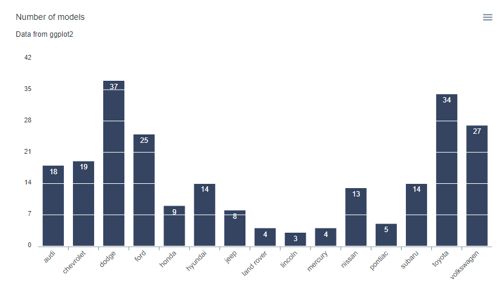

Htmlwidget for apexcharts.js : A modern JavaScript charting library to build interactive charts and visualizations with simple API. See the online demo for examples.
Installation
Install from CRAN with:
install.packages("apexcharter")Or install the development version from GitHub with:
# install.packages("remotes")
remotes::install_github("dreamRs/apexcharter")Quick Charts
Use apex function to quickly create visualizations :
library(apexcharter)
data("mpg", package = "ggplot2")
apex(data = mpg, type = "bar", mapping = aes(manufacturer))With datetime:
Full API
All methods from ApexCharts are available with function like ax_* compatible with pipe from magrittr :
library(apexcharter)
data(mpg, package = "ggplot2")
apexchart() %>%
ax_chart(type = "bar") %>%
ax_plotOptions(bar = bar_opts(
horizontal = FALSE,
endingShape = "flat",
columnWidth = "70%",
dataLabels = list(
position = "top"
))
) %>%
ax_grid(
show = TRUE,
position = "front",
borderColor = "#FFF"
) %>%
ax_series(list(
name = "Count",
data = tapply(mpg$manufacturer, mpg$manufacturer, length)
)) %>%
ax_colors("#112446") %>%
ax_xaxis(categories = unique(mpg$manufacturer)) %>%
ax_title(text = "Number of models") %>%
ax_subtitle(text = "Data from ggplot2")
Raw API
Pass a list of parameters to the function:
apexchart(ax_opts = list(
chart = list(
type = "line"
),
stroke = list(
curve = "smooth"
),
grid = list(
borderColor = "#e7e7e7",
row = list(
colors = c("#f3f3f3", "transparent"),
opacity = 0.5
)
),
dataLabels = list(
enabled = TRUE
),
markers = list(style = "inverted", size = 6),
series = list(
list(
name = "High",
data = c(28, 29, 33, 36, 32, 32, 33)
),
list(
name = "Low",
data = c(12, 11, 14, 18, 17, 13, 13)
)
),
title = list(
text = "Average High & Low Temperature",
align = "left"
),
xaxis = list(
categories = month.abb[1:7]
),
yaxis = list(
title = list(text = "Temperature"),
labels = list(
formatter = htmlwidgets::JS("function(value) {return value + '\u00b0C';}")
)
)
))Development
This package use {packer} to manage JavaScript assets, see packer’s documentation for more.
Install nodes modules with:
packer::npm_install()Modify srcjs/widgets/apexcharter.js, then run:
packer::bundle()Re-install R package and try apexcharter() or apex() functions.